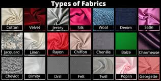
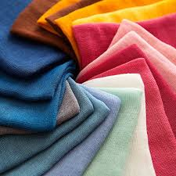
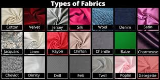
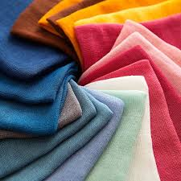

Fabric is a material resembling cloth. Cloth is a pliable material made through weaving, felting, or knitting fibers together Essentially, fabric is a material made from fibers and can be thick or thin, smooth or rough, light or heavy. The properties of the material are imparted from: the fiber used, the method used to create the fabric, and the treatment after it is made. Fabric is made from cloth that is a planar assembly of fibers. Natural, extracted fibers are joined together through friction to create fiber strands. Synthetic fibers are extracted into fiber strands. These strands are spun into yarn that form the planar assembly of fibers that become the fabric.
 


